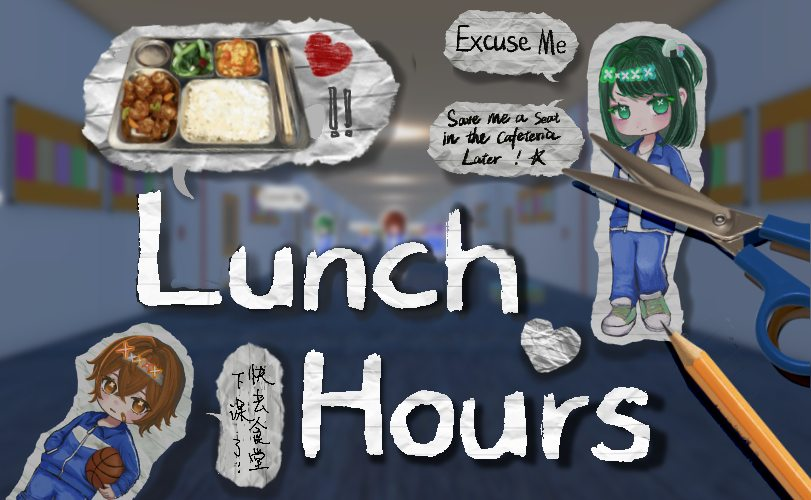
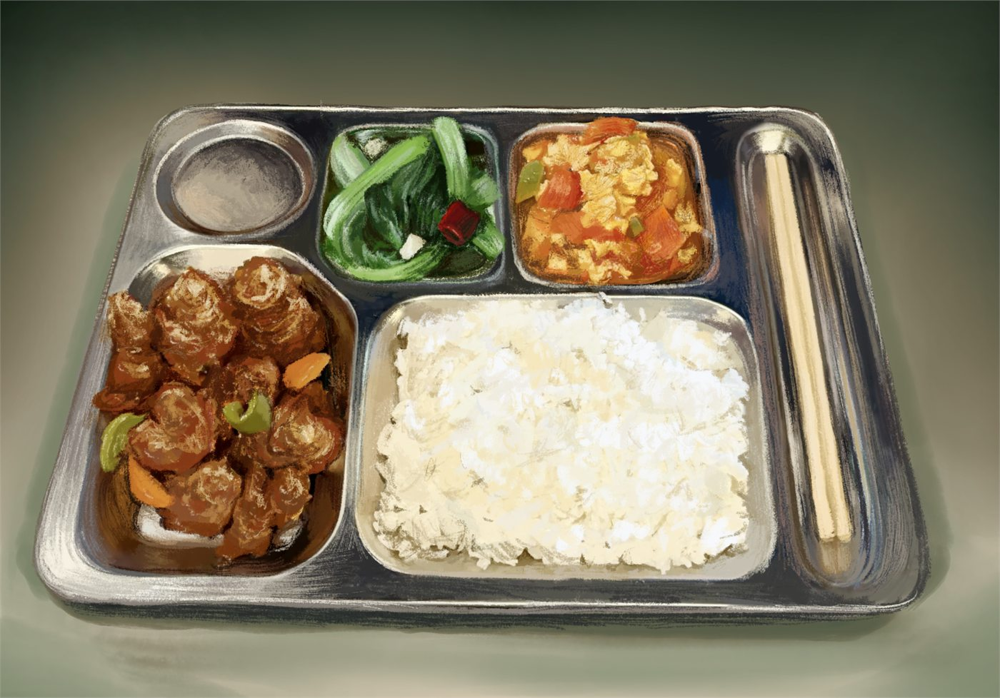
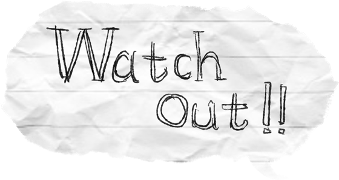
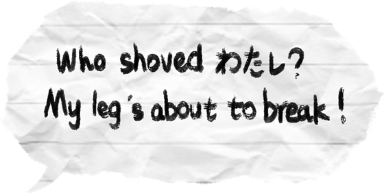
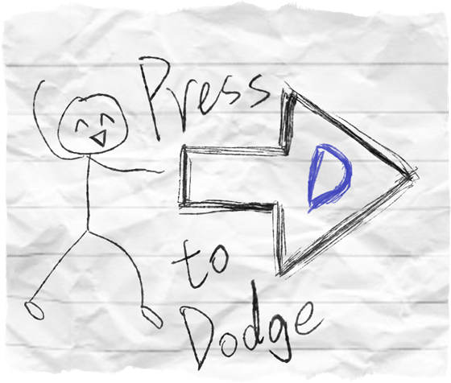
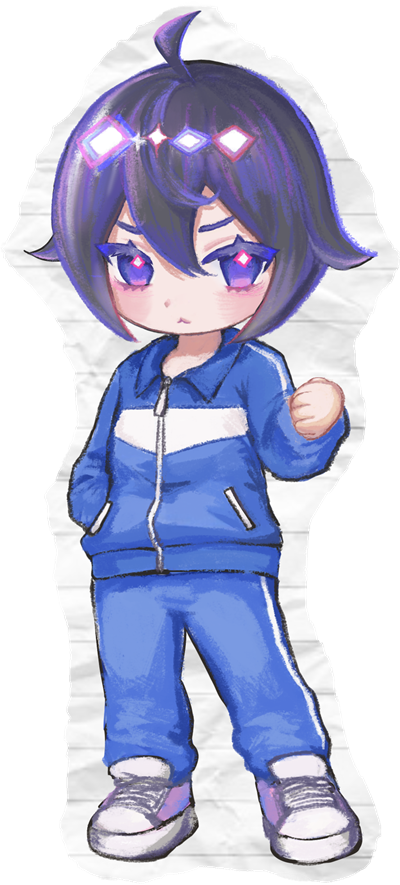
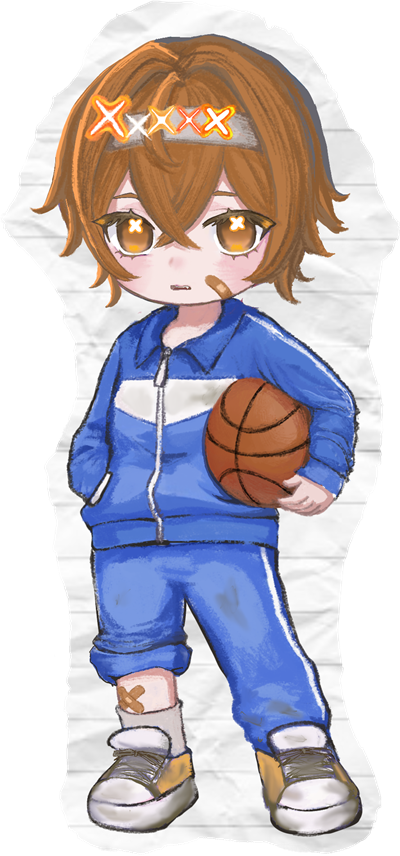
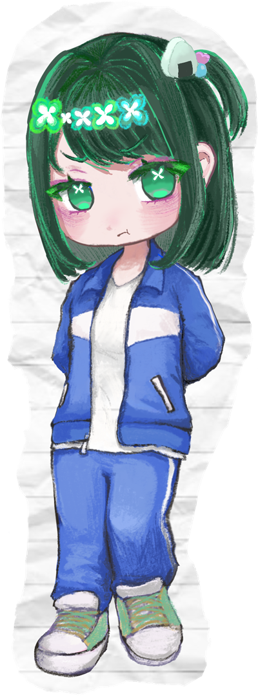

Selected Game
Lunch Hours
A lunchtime obstacle course built around the very specific panic of trying to beat the cafeteria line at a Chinese school.

Overview
In a Chinese school everyone has to get to the canteen at lunch, and if you are slow you are standing in a very long queue while very hungry. So the moment the last class before lunch ends, people run.
The player is on that run. Students and teachers fill the corridor and have to be dodged. What turns it from a corridor sprint into a design problem is what I did with conversation.
A social interruption is no longer text on the screen. It is speed and space pressure.

The tray is the only object in the game painted with real care. Everything obstructing the player, including classmates, teachers, and their conversations, is cut from scrap paper. The art direction tells you what the character wants before the game has to say it.
Dialogue as a physical obstacle
Some characters talk to you as you pass. In most games that is a dialogue box: it appears, you read it, you move on. Here I made the interruption a visible physical object in the world. The dialogue box occupies space in the corridor, so you have to jump over it or duck under it.
That single move does the work of the whole game. Avoiding the box is avoiding the conversation, and the cost of being polite is measured in the thing the player actually wants: time and a hot lunch. The social pressure and the movement pressure stop being two separate systems.


In-game dialogue scraps. These are the objects the player is physically dodging, which is why they are drawn as paper rather than as UI.
No tutorial level

Strictly speaking the game has no tutorial stage. It opens with a single instruction note; once the player understands the controls, the game goes straight into the main run.
That was a deliberate decision rather than a shortcut. A game about sprinting the second the bell rings should not begin by asking the player to stand still in a practice room. Teaching the control and starting the sprint in the same breath keeps the premise intact.
Why it is made of paper



The corridor crowd. Each character is drawn, cut out, and stood up in the scene, so the obstacle and the paper are literally the same object.
The whole art direction runs on a paper-cut and notebook-collage logic, something close to a paper wargame. Characters and dialogue boxes look cut out and pasted in, edges torn rather than trimmed, and all the lettering is handwritten.
That language is not only a style choice. It comes from growing up as a student in China, where entertainment was limited and a lot of play got invented on the spot: drawing on lined draft paper, cutting things out, making a game out of whatever was on the desk. Building the game out of the same material the original play was made of felt more honest than rendering the canteen realistically.
Gameplay
Hosted on YouTube. Nothing loads from YouTube until you press play.